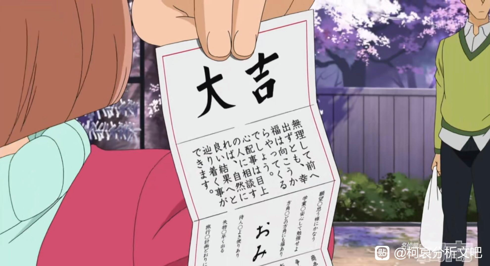
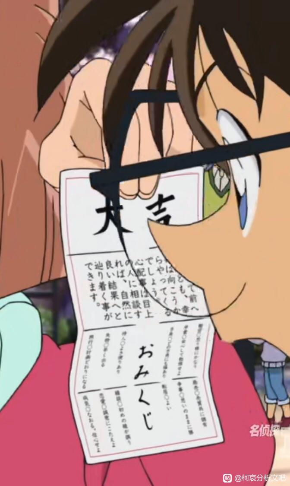
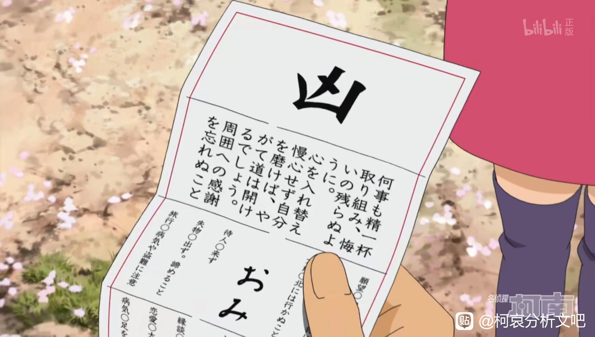
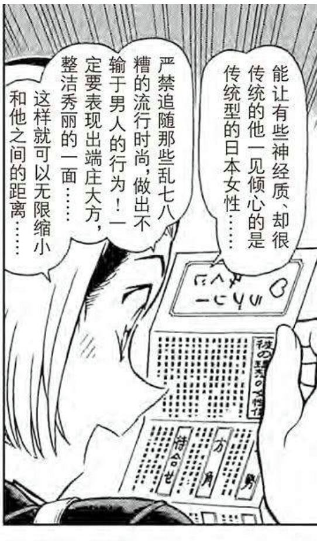
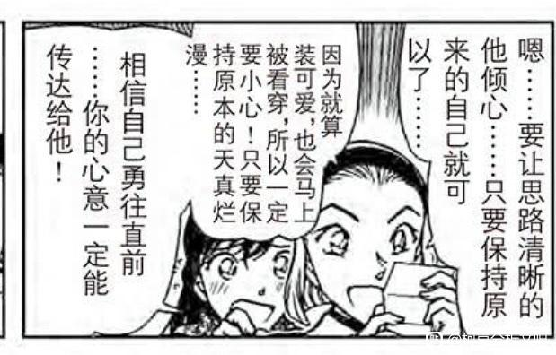
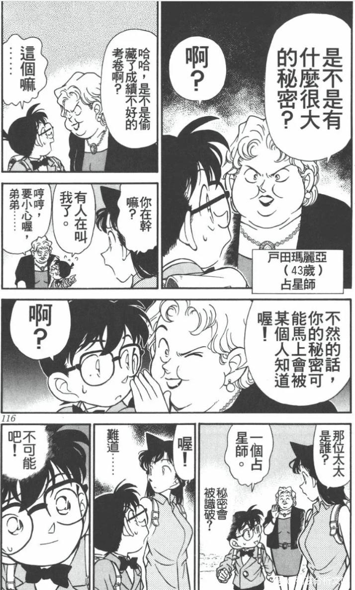
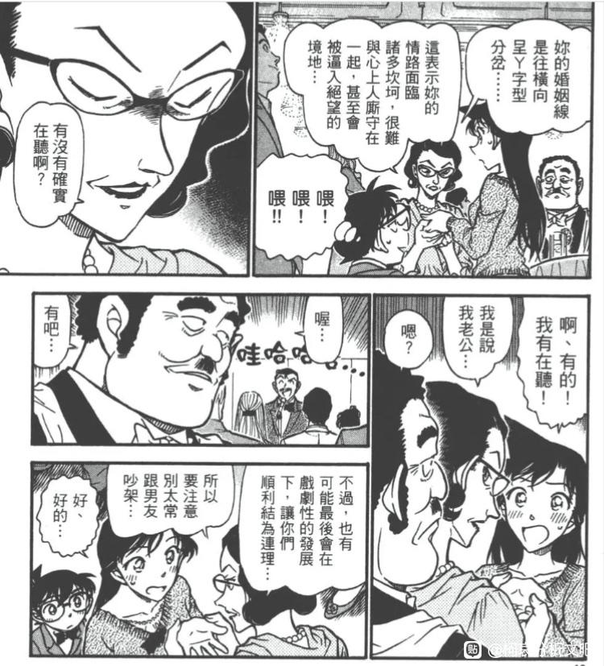
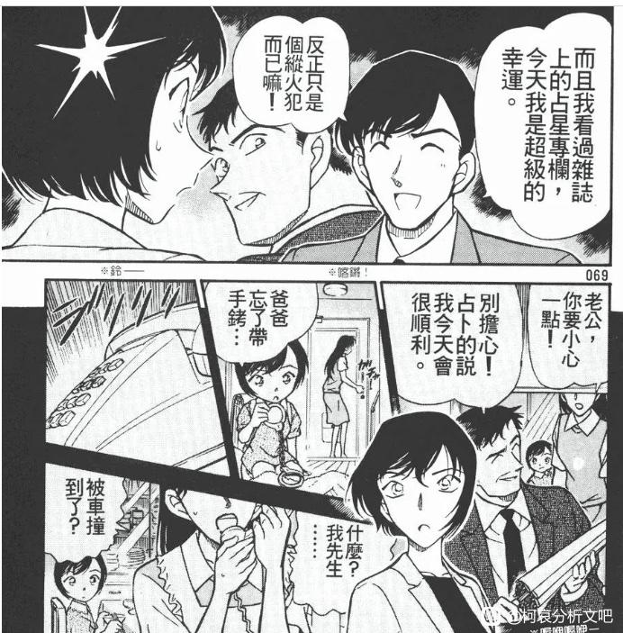

因为目前来说占卜或预言的意向已经出现过好几次（虽然我前面剧场版不计入主线），比如世纪末的魔术师柯南身份差点暴露之前就有预言，快新出次钟楼对决也有小泉红子的预言，甚至是柯南第一集小兰说有预感新一在也不会出现，就是感觉名柯里的宿命感好强啊，不知道这些出现的签是不是也有相印的象征意味？
小哀的签


2023-10-19 04:51 | 薬売Ω:之前看有人翻译了部分 原文： “無理して前へ出ずとも、幸福は向こうからやつてくるでしよう。心配事は目上の人に相談すれば、自然に良い結果へと辿り着く事ができます” 翻译： 即使不勉强往前走，幸福也会向着自己走来。担心的事情和长辈商量的话，自然会有好的结果2023-10-19 07:53 | 世界上没有真理:回复 薬売Ω :擔心的事向長輩商量.......喔！不會紅茶會背後論是真的吧？2023-10-19 08:22 | 赶车的鲁鲁修:进一步翻译：躺赢
柯南的签

2023-10-20 02:25 | 付出与过于丰富:请问这是什么意思啊？2023-10-20 08:22 | 虬空:回复 付出与过于丰富 :何事も精一杯取り組み、悔いの残らぬように。凡事都要竭盡全力，不要留下遺憾。心を入れ替え慢心せず自分を磨けば、やがて道は開けるでしよう。換一顆心，不驕傲地磨練自己，不久道路就會打開。周囲への感謝を忘れぬこと。不要忘記對周圍的人的感謝。2023-10-20 08:22 | 虬空:不过，这里好像是TV自己加的，漫画这一话柯子的凶签没有签文。
园子的恋爱签

2023-10-19 04:51 | 薬売Ω:这个看着感觉和真圆之间的关系有些类似（比如绀青之拳）
小兰的恋爱签


这个是柯南被平次看穿身份的预言

2023-10-19 08:10 | 薬売Ω:感觉名柯世界里除了柯学就是玄学😂
看手相也是一种占卜

2023-10-19 22:09 | 贴吧用户_0yVME5Z:“可能”，“戏剧性发展”2023-10-19 23:23 | 世界上没有真理:結果倫敦篇吵架2023-10-20 06:47 | 随意♬飘荡:然后伦敦篇马上就吵架了

不过这个占卜并不准，是flag了

2023-10-20 05:55 | 薬売Ω:回复 平者深黑 :但是佐藤正义忘带了手铐（然后高木保护了手铐（虽然这样说好像有点奇怪，还是有点区别，往护身符上扯？服部哪次好像也是做梦梦到新一被刀刺中，就把自己护身符借给柯南，然后柯南中的那刀被挡住了，反而是平次重伤2023-10-20 05:56 | 薬売Ω:回复 平者深黑 :不过可能我想的太多了吧，还有1200万人质好像佐藤看见了几次死神？也挺玄学的😂